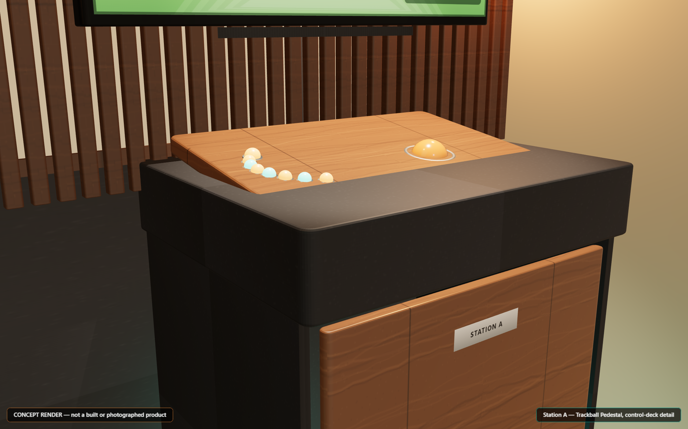

GRAPHICS + GAME FEEL / ENGINEERING STRATEGY
THE AMBITION
Keep the feel.
Raise the ceiling.
Better displays and controls can improve the experience. A true visual rebuild needs access to the rendering pipeline, new assets and evidence that the original game still plays correctly.
What changes for each game
Prove the original experience first. Upgrade its presentation without changing its timing. Treat a modern-engine game as a separate product decision.
01 / THREE DIFFERENT JOBS
An upgrade is not
automatically a remaster.
Hardware ownership gives us control over the cabinet and display chain. It does not give us source code, compatible texture replacements or permission to distribute a modified game.
02 / WHAT THE PIXELS MEAN
Bigger output.
Or genuinely new detail?
This original teaching illustration separates scaling an existing image from drawing a more detailed scene. It is not a before-and-after of any commercial game.
ILLUSTRATIVE DEMO · NO GAME CODE OR GAME ASSETS
The third view changes the artwork. No emulator setting is claimed to produce it. None of these images is a measured performance result.
03 / THE FOUR GAME CONTRACTS
Same ambition.
Different limits.
The selected release and its real hardware determine the upgrade path. A newer product with the same name is not a silent substitute.
04 / ENGINEER THE DEPENDENCIES
Measure before
buying the promise.
A hardware purchase follows a measured bottleneck. A patch follows an exact-release baseline. A new-engine project follows a separate scope and rights decision.
The film is a separate branch.
An original concept film can explore the desired look while hardware and software feasibility are still being proven. Its production does not block this guide or the shareable proposal. A cinematic render never counts as a game-compatibility test.
REFERENCE / PRIMARY EVIDENCE
What this plan relies on.
Documentation establishes a tool's scope. It does not prove our selected game works with it. Proposed test gates are targets, not results.